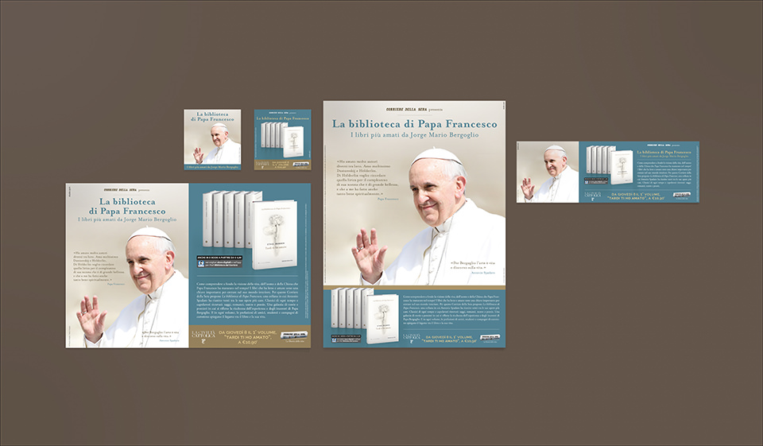
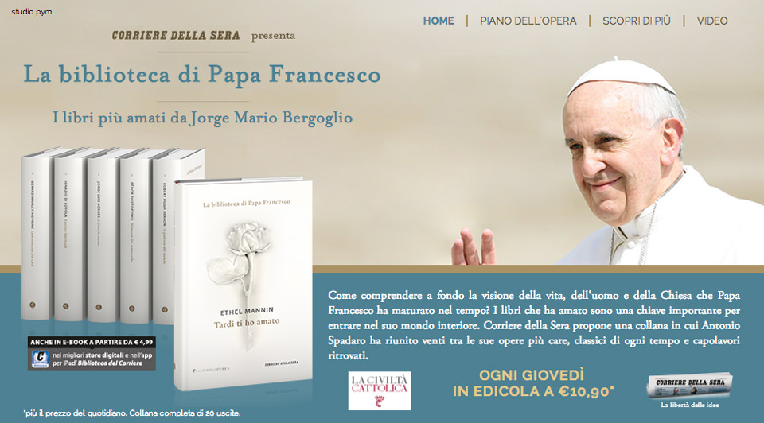
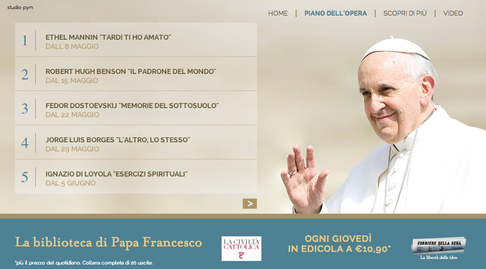
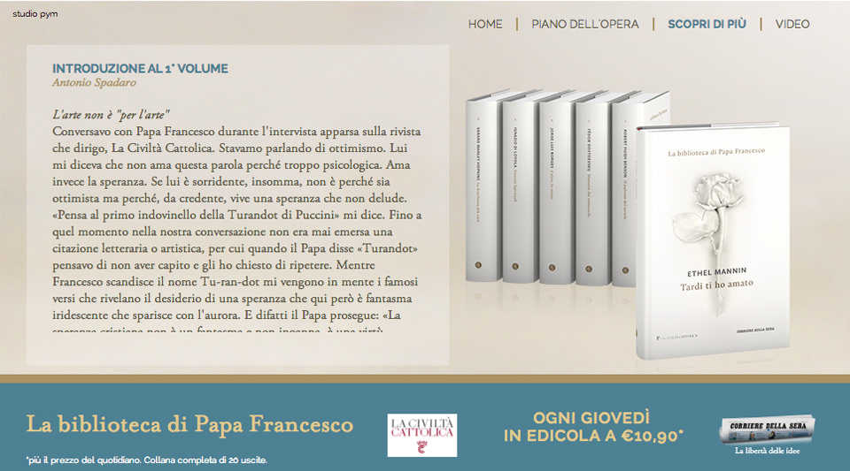

Una panoramica sui formati stampa pubblicati su Corriere della Sera

L'homepage del minisito di Corriere Store

Pagine interne del minisito di Corriere Store

Pagine interne del minisito di Corriere Store
Lo spot tv dedicato alla collana.
Animazione 3D: Gabriele Rivoli / Voce: Gianluca Iacono
LA BIBLIOTECA DI PAPA FRANCESCO
I libri che ha letto e amato sono una chiave importante per entrare nel mondo interiore di Jorge Mario Bergoglio.